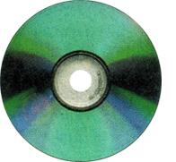

COUNTRY LORE
In the late summer, when the grapes are getting about as sweet as they can get, robins, finches, king birds and other fruitlovers become quite attracted to my arbors. I have found recycled compact discs can keep the birds at bay, at least during midday when they seem the most aggressive. The shiny, mirrorlike surfaces of CDs are highly reflective and create a bright, swirling rainbow of color. If you hang several discs around a tree or grapevine, the blinding reflection is too intense for those beady bird eyes, and the opportunistic omnivores seek easier peckings elsewhere. The trick to hanging the CDs for maximum bird-repelling effect is to bend a 3-inch--LONG for piece of wire into the shape of the Greek letter omega Make the loop part about 1/2 inch wide so it slips through the hole in the center of the disc. The "feet" of the omega catch the edge of the hole so the wire hanger doesn't slip through entirely. Tie a length of fishing line to the center of the omega's loop and the other end to a s upporting branch. If done properly the disc should have the shiny side facing skyward, but should not be balanced perfectly horizontal. Instead let the disc tilt at a 30 to 45 degree angle. The discs should be able to rotate freely and placed where they can catch the sun's rays. PAUL NEHER Las Cruces, New Mexico
If anyone calls to sell you Mother Earth News and is rude or unpro f essional, and you have Caller ID, please report the call and pbone number to us at (800) 678-4883, or send an e-mail to letters@motberearthnews.com. -MOTHER
|
 |
|
|